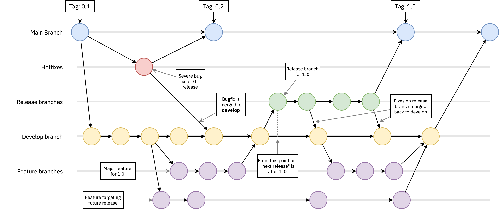

$ sudo apt install git
People commonly authenticate to Git and GitHub using:
People interact with Git and GitHub using various tools and environments:
SSH offers stronger authentication and security compared to HTTPS. Follow these steps to set up SSH:
ssh-keygen -t rsa -b 4096 -C "your.email@example.com" -f /$HOME/.ssh/git_rsaThis saves the keys as ~/.ssh/git_rsa (private key) and ~/.ssh/git_rsa.pub (public key).
Copy the contents of ~/.ssh/id_rsa.pub and add it to your Git hosting service account (e.g., GitHub, Codeberg).
git remote set-url origin git@github.com:user/repo_name.git
Set user name and e-mail address (required to do 'commit')
git config [--global] user.email "your.email@example.com" git config [--global] user.name "Your Name"
Store/cache password (alternative method)
git config [--global] credential.helper cache
Set the remote repository (for existing code)
git remote add origin https://github.com/user/repo_name.git

|
Clones fork to our local system git clone <fork> |
Make sure local copy is clean and checks status git status |
Adds file to staging area git add <file> |
|
Commits changes (git commit -a -m “commit notes”) git commit -m <comment> |
Detailed information about commits git log —-stat |
Add origin to local repo git remote add origin https://github.com/repo/git.git |
|
Pushes main branch to remote git repo and store so you can just (git push) git push -u origin main |
Pulls changes from remote repo git pull origin main |
Unstage file git reset <file> |
|
Remove changes before last commit git checkout —- <file> |
Create a new branch off your main branch git branch <branch_name> |
List current branches git branch |
|
Switch branches to specified branch name git checkout <branch_name> |
Create branch and checkout git checkout -b <branch_name> |
Remove all text files git rm ‘*.txt’ |
|
Remove folder from tracking git rm -r <folder_name> |
Merge branch into main git merge <branch_name> |
Cleanup/remove branch git branch -d <branch_name> |
|
Push changes to remote repo git push |
Delete files that are no longer there while committing git commit -a |
Git pull a different directory git -C <repo_location> pull |
|
Rewriting the remote's history to be exactly like your local copy git push -f origin master |
Git git |
If your forked repository has diverged significantly from the upstream repository, you can rebase your local repository to synchronize with the upstream changes:
git remote -v
If not configured, add upstream:
git remote add upstream <upstream-repo-url>
git checkout main git fetch upstream
git rebase upstream/main
git pull origin main
git push -u origin main --force
Your local and remote main branches are now synced with the upstream repository.
Codeberg is a free and open-source collaborative platform similar to GitHub. Here's how you can contribute to projects on Codeberg:
git clone https://codeberg.org/yourusername/repository.git
git add . git commit -m "Your commit message"
git push origin main
To ignore certain files across all your Git repositories, you can set up a global gitignore file:
Create a global git ignore file:
echo .DS_Store >> ~/.gitignore_global
Set the global git ignore file:
git config --global core.excludesfile ~/.gitignore_global